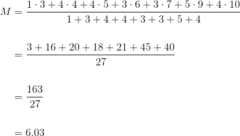
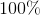
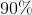
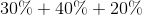
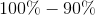
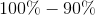

Aplicații
În această pagină, profesorii noștri experimentați de matematică ți-au pregătit câteva exerciții rezolvate complet, în care s-au folosit noțiunile prezentate în acest al treilea capitol.
Exercițiul 1
Se dă tabelul următor cu notele obținute la teza de matematică de elevii clasei a VIII-a :

Să se calculeze media pe clasă a notelor obținute la teza de matematică.
Soluție:
În tabelul anterior observăm că un singur elev a obținut nota  ,
,  elevi au obținut nota , tot elevi au obținut nota
elevi au obținut nota , tot elevi au obținut nota  , ș.a.m.d.
, ș.a.m.d.
Atunci, media pe clasă se calculează cu ajutorul mediei ponderate astfel:

.
Exercițiul 2
În graficul de mai jos, este reprezentat profitul exprimat în milioane RON a unei companii pe perioada a zece ani. În ce an profitul a avut valoare maximă?

Soluție:
Citind pe graficul de mai sus, observăm că cea mai ridicată valoare a profitului (valoarea maximă) este de milioane Ron. Această valoare este atinsă în cel de-al  -lea an.
-lea an.
Exercițiul 3
Diagrama de mai jos reprezintă procentul elevilor din clasa a VII-a care au preferat un anumit sport. Care este procentul celor care iubesc handball-ul?

Soluție:
Suma procentelor într-o astfel de diagramă este de .
Astfel, suma procentelor celor care preferă fotbalul, tenisul sau alte sporturi în afară de handball este de  (  ).
Atunci, procentul celor care preferă handball-ul este de  (  ).
(  ).